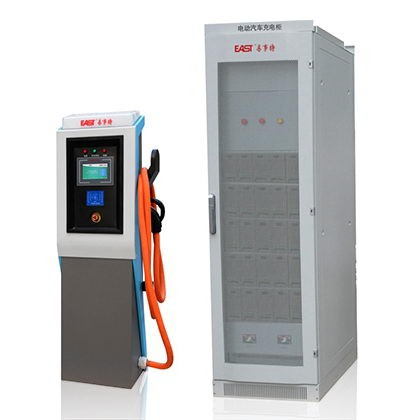

首页
常州钣金加工
金坛钣金加工
新北钣金加工厂
丹阳钣金加工
常州钣金加工厂
溧阳钣金加工
武进钣金加工
常州冲压加工
丹阳冲压加工
金坛冲压加工
常州冲压加工厂
常州激光切割加工
丹阳激光切割加工
金坛激光切割加工
常州激光切割加工厂
常州焊接加工
常州焊接加工厂
新北区焊接加工
金坛焊接加工
常州折弯加工厂
常州喷涂加工
常州不锈钢加工
抛光加工
首页
常州钣金加工
常州钣金加工
常州钣金加工
常州钣金加工
常州钣金加工
常州钣金加工
常州钣金加工
常州冲压加工
常州冲压加工
常州冲压加工
常州冲压加工
常州激光切割加工
常州激光切割加工
常州激光切割加工
常州激光切割加工
常州焊接加工
常州焊接加工
常州焊接加工
常州焊接加工
常州折弯加工厂
常州折弯加工厂
常州不锈钢加工
抛光加工
分类：常州钣金加工厂
常州轨道交通行业中钣金加工
常州轨道交通行业中钣金加工轨道交通包括铁路、地铁、轻轨、有轨电车，也包括胶轮的单轨交通系统、线性电机牵引系统、磁悬浮系统、空中客车等，我们大致把它分为国铁和城铁两类。目前轨道交
常州钣金加工厂
2021-06-09
548
浏览
钢制家具钣金加工厂
钢制家具钣金加工厂常州钣金加工最初为家庭作坊式企业，经过近四十年的发展，从简单的焊接加工到生产钢制办公家具，再到生产民用家具、金融设备、图书设备、校用设备、防火防盗门、保险柜等
常州钣金加工厂
2021-06-03
556
浏览
柳州金刚石选型机
柳州金刚石选型机联系电话:13506122530联系人:邓经理国内金刚石生产企业和制品企业使用金刚石选形机对合成的金刚石物料进行选形到如今已有30多年的历史了。但是随着企业老技
常州钣金加工厂
2021-05-27
517
浏览
不锈钢制品的相关知识
为了更好地*不锈钢制品*的美观，在不锈钢制品加工后，许许多多顾客需要打磨不锈钢制品或抛光不锈钢制品。不同的顾客有不同的需求，通常需求有不锈钢制品粗磨和不锈钢制品精磨。不锈钢制品
常州钣金加工厂
2021-05-17
588
浏览
常州非标钣金加工厂家
常州非标钣金加工厂家为专业的常州灌装机架，非标钣金，常州非标钣金生产厂家，常州钣金加工|非标制品厂家，业生产加工定制各种型号钣金加工|非标制品净化设备，新钣金加工|非标制品报价
常州钣金加工厂
2021-05-05
643
浏览
户外电缆分支箱
1、概述：EY.DFW□-12型户外高压电缆分接箱是额定电压12kV,额定电流630A及以下的户外高压电器设备，广泛用于电力电缆的联接和分支。2、适用场所：本产品广泛应用于10
常州钣金加工厂
2021-05-03
460
浏览
真空断路器
常州配电箱.常州动力柜.常州表箱.常州GGD柜.常州JP柜.常州电缆分支箱.常州仿威图柜.常州操作台.常州计量柜.常州环网柜.常州各种非标柜体。环网柜|电缆分支箱|充气柜真空断
常州钣金加工厂
2021-05-03
485
浏览
家具钣金行业工艺分析
家具钣金行业工艺分析最近金融圈子最流行的就是“抄作业”，在很多的投资者眼中，相比于国内五花八门的金融解析，紧跟投资界大佬往往是一条捷径。而在基础制造领域也是如此，如果有一个这样
常州钣金加工厂
2021-04-29
482
浏览
常州配电箱制作
常州配电箱制作拥有公共连接的三相系统通常如图5的示意图所示，称为“Y形或星形”接法，公共点称为中性点，为安全起见，这个点通常在电源上接地，在实践中，负载并不是完美均衡的，要使用
常州钣金加工厂
2021-01-30
608
浏览
喷砂厂
喷砂厂喷砂除锈是采用压缩空气为动力，以形成高速喷射束将喷料（铜矿砂、石英砂、金刚砂、铁砂、海南砂）高速喷射到需要处理的工件表面，使工件表面的外表面的外表或形状发生变化，由于磨料
常州钣金加工厂
2021-01-30
607
浏览
常州充电桩钣金厂
常州充电桩钣金厂充电桩指的是给电动汽车充电的设备，是利用充电技术给替代传统汽油、柴油。也就像是加油站里的加油机，他可以固定在地面或墙壁，也可以安装在公共建筑和小区停车场，并可以
常州钣金加工厂
2021-01-09
671
浏览
汽车充电桩外壳

常州汽车充电桩外壳:充电汽车充电桩报价选择【汽车充电桩外壳】提出要着力破除制约产业发展的充电便捷性问题，积极推广智能有序慢充为主、应急快充为辅的居民区充电服务模式，推动新能源汽
常州钣金加工厂
2021-01-09
657
浏览
冲压钣金加工
冲压钣金加工关于初度接触钣金加工的人来说，绝大多数的人混淆钣金加工与冲压加工的概念，虽然这两者都有着许多相同之处，但还是有着必定的差异的。首先从概念上来说，钣金加工是指金属板材
常州钣金加工厂
2020-12-28
557
浏览
<
<<
3
4
5
>>
>